まずはお話を丁寧にうかがいます
いつから気になるのか、どんな動きがつらいのかを一つずつ確認しながら、その日に無理のない進め方をご提案します。
ご予約・ご相談はこちら
04-7114-3274階段の上り下りがつらい、歩き始めに膝が痛む、長く歩くと不安になる。
膝をかばううちに、腰や股関節まで気になってきた。そんな40代以降に多いお悩みを、膝を軸に全身の動きから丁寧に確認します。
その場しのぎではなく、施術と運動療法を組み合わせながら、再発しにくい体づくりを一緒に目指します。
アクセス
柏駅西口
徒歩8分
ご案内
完全予約制
待ち時間なし
対応者
国家資格者が
一貫対応
初回料金
カウンセリング込み
1,980円
膝痛を中心にみています
変形性膝関節症や歩行時の痛み、階段のつらさなど、膝まわりの不調を丁寧に確認します。
慢性痛のご相談にも対応
腰痛や坐骨神経痛など、膝以外の慢性的なお悩みも、動きや姿勢を見ながら一緒に整理します。
初回は状態確認から
いきなり施術だけを進めず、今のお困りごととお体の状態を確認したうえで方針をご案内します。
FIRST VISIT
料金を見る前に、まず当日の進め方を確認できるようにしました。不安なまま施術に入らないため、状態確認と説明を先に行います。
初回で行うこと
行わないこと
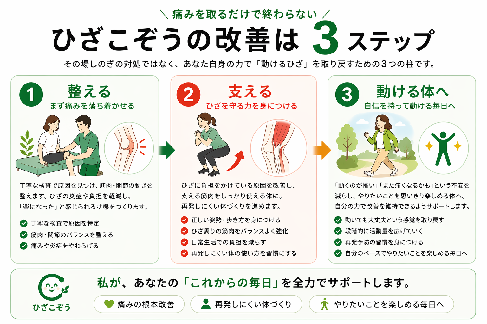
痛みを取るだけで終わらない
その場しのぎの対処ではなく、あなた自身の力で「動けるひざ」を取り戻すための3つの柱です。
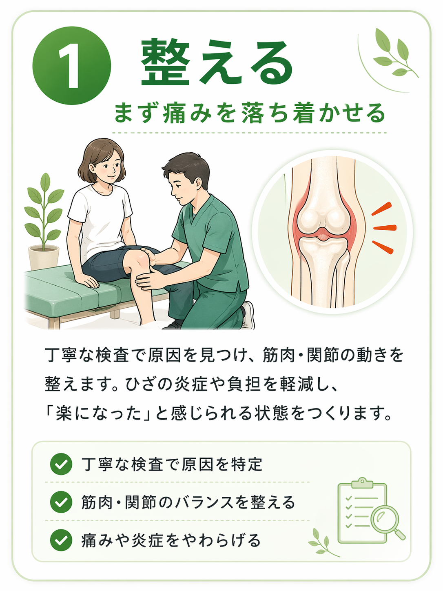
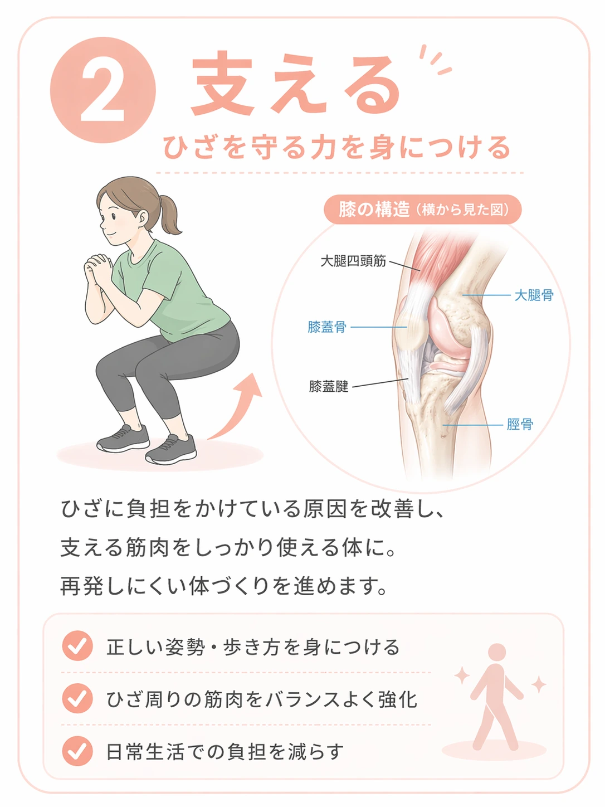
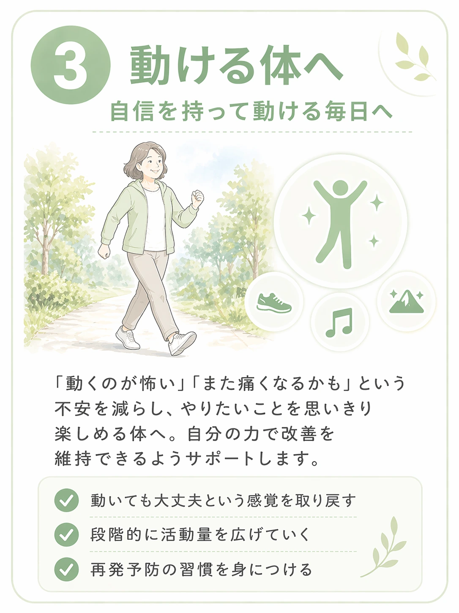

歩き始めや立ち上がりで、膝にズキッとした痛みが出る
階段の上り下りや長時間の歩行がつらく、外出が不安になってきた
膝をかばって歩いているうちに、腰や股関節まで気になってきた
湿布や注射、マッサージを受けても、時間がたつと戻ってしまう
正座やしゃがむ動作がしづらく、日常の小さな動きが気になる
好きなことを「膝が心配だから」と控えることが増えてきた
膝に痛みがあっても、負担のかかり方を見ていくと、股関節や腰、姿勢、歩き方の癖が関わっていることがあります。
もちろん、痛い場所そのものを確認することも大切です。ただ、膝だけに注目すると、なぜ繰り返すのかが見えにくいことがあります。
当院では、痛みのある場所と全身の動きの両方を確認しながら、施術と運動療法を組み合わせて再発しにくい体づくりを一緒に進めていきます。
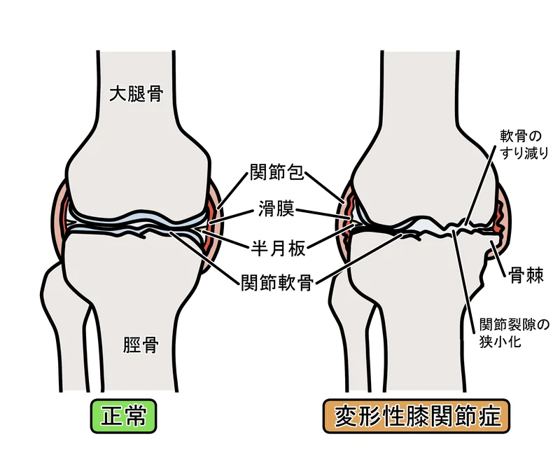
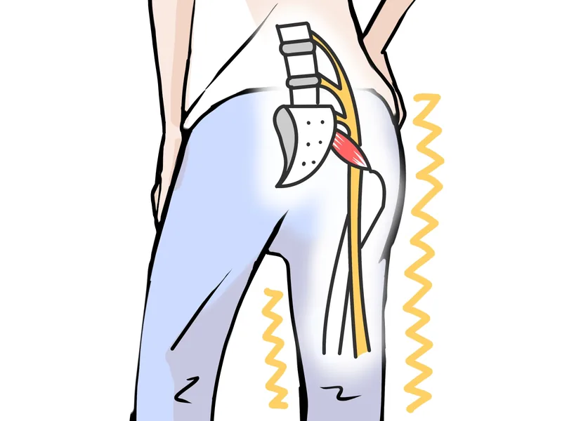
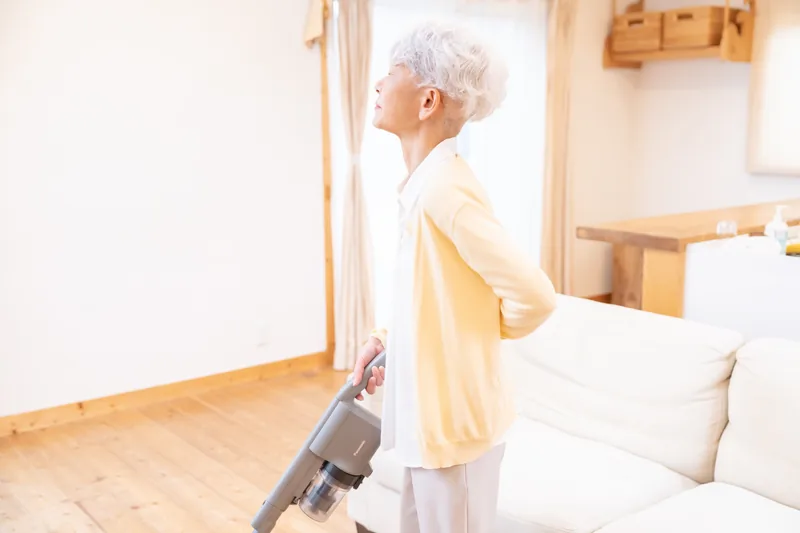
膝
痛みの出方や曲げ伸ばしを確認し、今どの動きで負担が出やすいかを整理します。
股関節
股関節の硬さや使い方によって、膝に負担が集まっていないかを見ていきます。
腰・姿勢
腰まわりの硬さや姿勢の崩れが、歩行時のバランスに影響していないかを確認します。
歩き方
立ち上がりや歩行を一緒に見ながら、日常で膝に負担がかかる場面を把握します。
以下の「3つの柱」を組み合わせ、
膝痛を中心に慢性痛まで一貫してサポートします。
痛くて動かせない体を、まずは安全に動かせる状態に整えます。症状に合わせて筋膜や関節へアプローチし、体全体のバランスを調整します。
整体で土台を整えた後、一人ひとりの状態に合わせた安全なエクササイズを指導します。関節を支える筋肉を正しく使うことで、膝や腰への負担を減らし再発を防ぎます。
長く痛いと、脳が「動く＝痛い・怖い」と誤解して体を固めてしまいます。施術を通して「この動きなら痛くない」という経験を積むことで、痛みの悪循環を断ち切るサポートを行います。
よくわかるガイド
当院が「ただ揉むだけ」ではない理由をまとめました。
詳しく知りたい方は、各項目をタップしてご覧ください。
湿布や痛み止めなどは、その場の痛みを和らげるための対症療法として有効です。しかし、膝に負担をかけている体の使い方やバランスの崩れがそのままになっていると、また痛みを繰り返しやすい傾向があります。
痛みを避ける「庇う歩き方」を無意識に続けていると、腰や背中へと負担が偏ります。結果として、腰痛といった別のお悩みに繋がることも少なくありません。
手術などの治療を受けた後でも、長年の癖である「膝に負担をかける体の使い方」が修正されていなければ、特定の部位に再び負荷が集中することが考えられます。
だからこそ、手技による調整と合わせて、ご自身の体を正しく動かせるようにする「保存療法（運動療法など）」を併用することがとても大切です。
長期間痛みにさらされると、神経が過敏になり、通常よりも痛みを感じやすくなることがあります。
さらに、「動かすとまた痛くなるのでは…」という恐怖心から体を無意識に固めてしまい、筋肉が緊張して余計に動きづらくなる悪循環に陥りがちです。当院では少しずつ成功体験を積み重ね、この悪循環から抜け出すお手伝いをします。
当院では、体の状態に合わせて丁寧なステップでアプローチを行います。
まずは、緊張しきった筋肉や関節をソフトな手技で緩めます。関節の動きやすさを取り戻し、動かしやすい土台を整えます。
体が動かしやすくなったら、関節を守る筋肉を正しく使えるように簡単な運動を取り入れます。これにより負担を減らします。
「動かしても大丈夫だった」という感覚を少しずつ積み重ねます。ご自宅での過ごし方もアドバイスし、生活の質の向上をサポートします。
BEFORE VISIT
「この膝は良くなるのか」「水が溜まったらどうすればいいのか」「どこまで見てもらえるのか」。迷いやすい内容を、先に読みやすい順番でまとめました。
ブログ一覧を見る「何をされるのか分からなくて不安」という方がほとんどです。だから当院では、次に何をするのかを必ずお伝えしながら進めます。終わる頃には「思ったより怖くなかった」と言っていただけることが多いです。
当院は完全予約制のため、お待たせすることなくあなたのお時間を確保します。お電話またはLINEでご予約の上、お気をつけてご来院ください。
いつから痛むのか、どんな時に辛いのかをじっくりお伺いします。施術中も「今どう感じますか」と声をかけながら進めるため、会話の中から体の状態をより深く把握できます。不安なことは何でもお話しください。
実際に歩いたり、曲げ伸ばしをしていただきながら、どこに負担がかかっているかを確認します。「ここが原因だったんですね」と納得していただくことが、施術の第一歩です。
確認した状態をもとに、その日のあなたの体に合わせた施術を行います。ソフトな手技で体を整えた後、正しい筋肉の使い方を一緒に練習します。「さっきより動きやすい」という感覚を、その場で体験していただきます。
施術前後で体の変化を一緒に確認します。「どこがどう変わったか」が分かると、次回への安心感につながります。ご自宅でできる簡単なケアをお伝えして終了です。
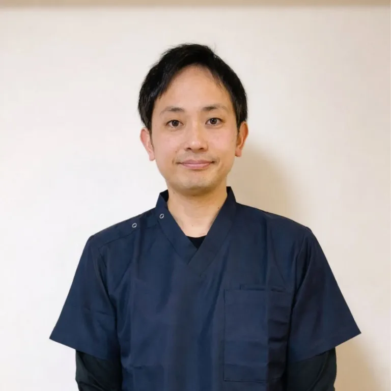
整体院ひざこぞう 院長
施術歴14年 / 国家資格 柔道整復師 保有
接骨院にて外傷・エコー検査の臨床経験
整体院にて慢性痛に特化した技術を修得
趣味：料理・サッカー・温泉めぐり
学生時代の膝の怪我、20歳での指定難病（クローン病）診断と長期入院—「先が見えない不安」を自分自身が経験したからこそ、同じ思いを抱える方に寄り添いたいと思っています。
施術と運動療法を組み合わせ、再発しにくい体づくりを一緒に目指します。
ご相談で大切にしていること
膝が痛み始め、正座も曲げ伸ばしもできない状態で飛び込みました。週2回通院し、毎日のリハビリを続けているうちに、気がつけば痛みがほとんど気にならなくなっていました。その方に合った施術とアドバイスをしてくださるので、同じように悩んでいる方にお伝えしたいです。
60代女性
変形性股関節症と診断され、「我慢できなくなったら手術」と言われ不安な日々でした。回数を重ねるうちに少しずつ痛みが落ち着き、今では薬も湿布もほとんど使わなくなりました。ストレッチも教わり、自分でもケアできるようになって安心感があります。
50代女性
ぎっくり腰を繰り返しており、常に腰に爆弾を抱えているような不安な毎日でした。根本的に改善したいと来院し、全身のバランスを整えてもらうことで腰痛がほとんど出なくなりました。姿勢も良くなり、周りからも「若返った」と言われるようになりました。
50代男性
左肩から腕にかけて激痛があり、夜も眠れず服の着替えも辛い毎日。他の整骨院に半年通っても変化がなく、こちらに来院しました。丁寧なカウンセリングと痛みの少ない施術で、通うたびに肩が動きやすくなりました。自宅でのケアも教わり、日常生活がずいぶん楽になっています。
40代女性
少し歩くと足がしびれて歩けなくなる状態で、手術を勧められていました。手術には踏み切れず、こちらに辿り着きました。施術と教えていただいたトレーニングを根気よく続けた結果、歩ける距離がどんどん伸びていきました。今では旅行で長時間歩いても気にならなくなり、行動の幅が広がりました。手術を迷っている方は、まず一度相談してみてください。
60代男性
※掲載しているお声は掲載許可をいただいた方のものです。
※個人の感想であり、成果を保証するものではありません。
リラックスして施術を受けていただけるよう、清潔で明るい空間づくりを心がけています。※画像はタップ（クリック）すると拡大してご覧いただけます。
初めての方にも、話しやすさと院内の落ち着いた雰囲気が伝わるようにしています。
いつから気になるのか、どんな動きがつらいのかを一つずつ確認しながら、その日に無理のない進め方をご提案します。
体の状態や今後の考え方を、専門用語ばかりにならないようできるだけ分かりやすくお伝えしています。
SYMPTOMS
膝痛を中心に、歩行や姿勢の影響を受けやすい慢性痛までご相談いただけます。気になる症状をタップすると、詳しい説明ページをご覧いただけます。
KNEE
階段・歩き始め・曲げ伸ばしでつらい膝痛をまとめて確認できます。
BACK / NERVE
膝をかばう動きから出やすい腰の不調を確認できます。
SHOULDER / NECK
肩が上がらない、首から腕にかけての不調を確認できます。
OTHER
膝や腰とあわせて相談されやすい症状も確認できます。
「自分に合うのか不安」という方にも安心してお越しいただけるよう、
初回はお悩みを伺いながら無理のない流れでご案内します。
※ 初回限定価格は予告なく終了する場合があります
ご予約前によくいただく質問をまとめました。
当院は慢性的な痛みや根本的な見直しを目的とした施術を行っているため、すべて自費診療（保険適用外）となります。お一人おひとりに合わせた丁寧な施術をご提供いたします。
強い力で関節を鳴らすような施術は行いません。身体の構造に基づいたソフトで安全な手技を用いて、状態に合わせて力加減を調整しますのでご安心ください。
関節の動きを確認したり運動を取り入れるため、ジャージやスウェットなど「動きやすい服装」でお越しください。院内でお着替えいただくことも可能です。
状態によって個人差はありますが、最初の数回は週1回程度のペースで通っていただき、安定してきたら徐々に間隔を空けていくケースが多いです。初回時にお体の状態を確認したうえで最適なプランをご提案いたします。
はい、ご相談いただけます。整形外科での検査結果や現在の治療内容が分かるものがあれば、来院時にお持ちいただけると状態を整理しやすくなります。
はい。膝痛を主軸としながら、腰痛、坐骨神経痛、股関節まわりの不調など、慢性的なお悩みにも対応しています。症状の組み合わせがある場合もご相談ください。
大丈夫です。無理な運動は行わず、今の状態に合わせて続けやすい内容からご案内します。まずは「これならできそう」と思える内容を一緒に探していきます。
専用駐車場はありませんが、徒歩1〜2分以内に以下のコインパーキングがあります。
もちろん大丈夫です。まずはお体の状態や普段の生活についてお話をお伺いすることから始めます。施術中も声をかけながら進めますので、気になることや不安なことはいつでもおっしゃってください。リラックスしてお越しいただければ幸いです。
ご都合が変わった場合は、なるべく早めにお電話またはLINEにてご連絡ください。当日キャンセルは他の患者様のご予約に影響が出る場合がありますので、前日までのご連絡にご協力をお願いしております。
膝の不安、体の使い方、施術の考え方を短い時間で整理できます。
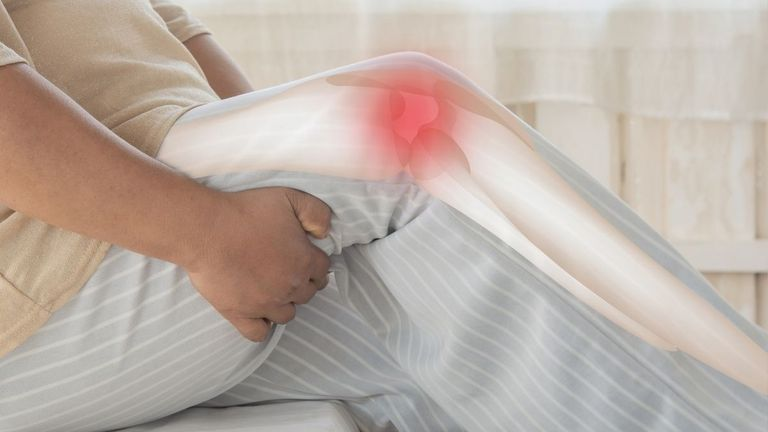
変形や年齢だけであきらめる前に、痛みを軽くするために確認したい視点を整理しています。

水を抜いた後に何を見直すべきか、膝への負担と炎症の考え方をやさしく整理します。
膝だけを揉むのではなく、歩き方や股関節、足元まで見る理由がわかります。
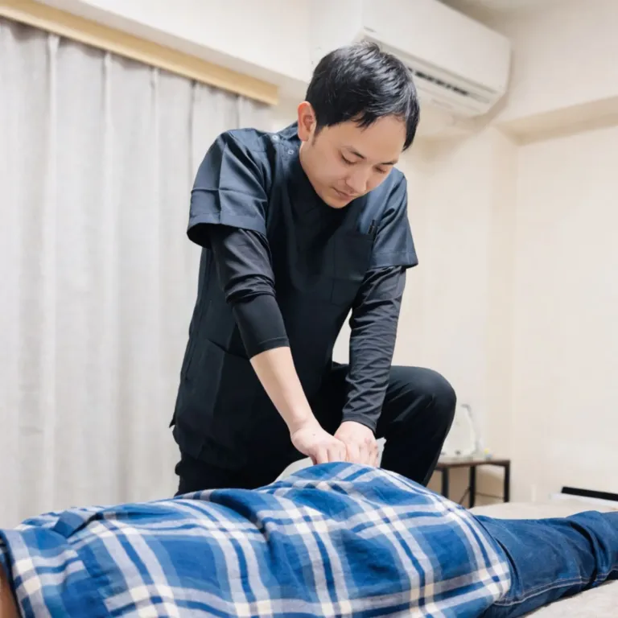
サボり筋とガンバリ筋という考え方から、当院の施術と運動療法の流れを紹介します。
痛みがある方に必要なのは、強く鍛える前に体の使い方を思い出すことかもしれません。

一歩目や立ち上がりで膝が痛む方へ、動きの準備不足という視点から整理します。
東武バス「柏09」系統（柏の葉キャンパス駅東口方面）
柏駅西口バスターミナル乗車 → 「柏第一小学校前」下車（約1分）→ 徒歩すぐ
※「柏02」「柏05」系統は遠回りになりますのでご注意ください（約18分）
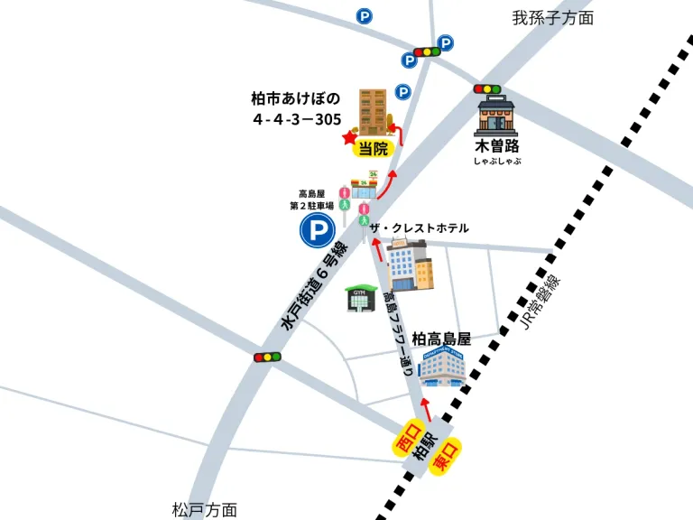
※LINEをお使いでない方はこちらから。
24時間以内に折り返しご連絡いたします。
送信が完了しました
お問い合わせありがとうございます。
内容を確認し、24時間以内に折り返しご連絡いたします。
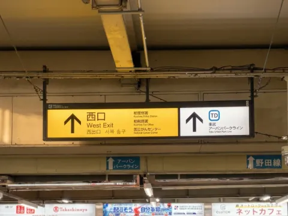
柏駅「西口」を出て、正面のエスカレーターまたは階段を降ります。
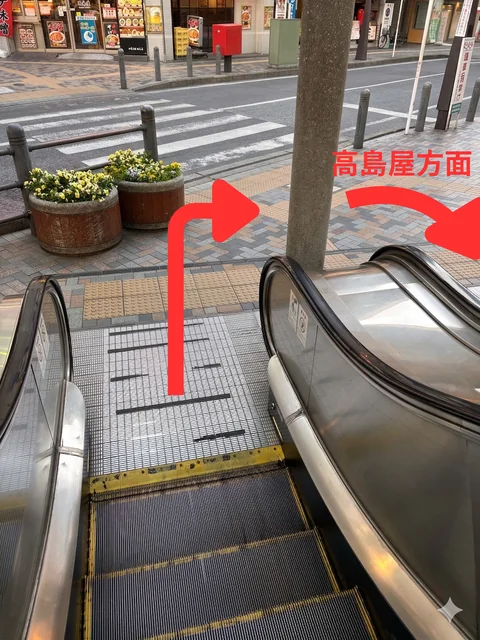
エスカレーターを降りたら右に曲がり、高島屋方面の歩道に進みます。
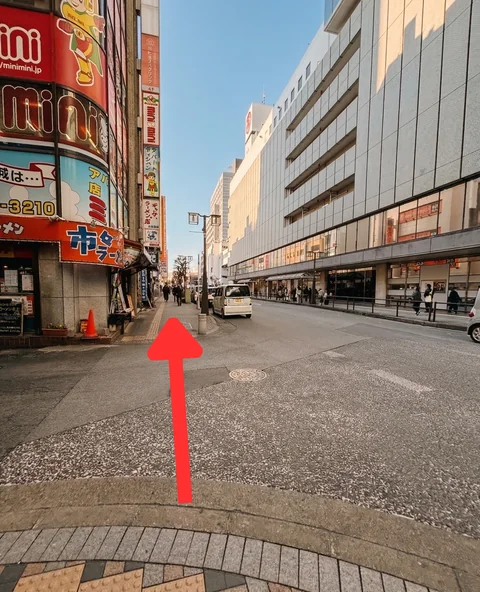
高島屋を右手に直進し、国道6号線（水戸街道）の「柏駅西口」交差点に向かいます。
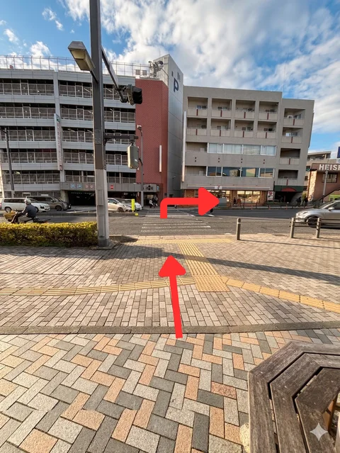
横断歩道を通って国道6号線を渡り、そのまま直進します。
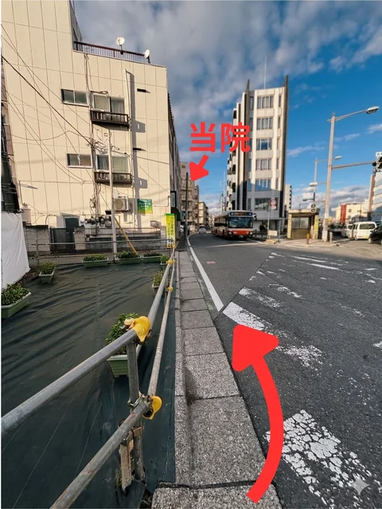
斜めに入る道を曲がって直進すると、左手に茶色のマンション「BoaSorte柏」が見えます。当院はそちらの3階（305号室）です。エレベーターでお上がりください。